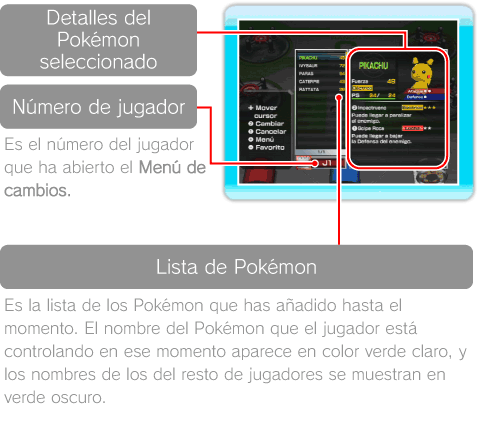
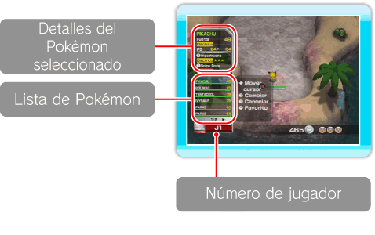
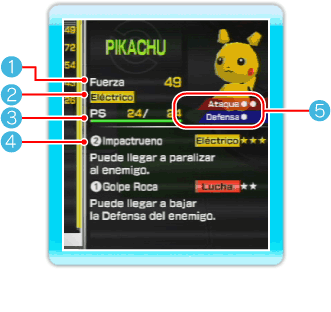
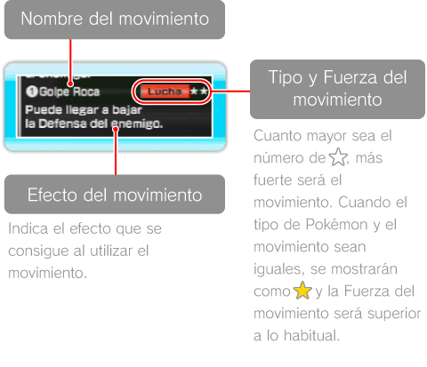
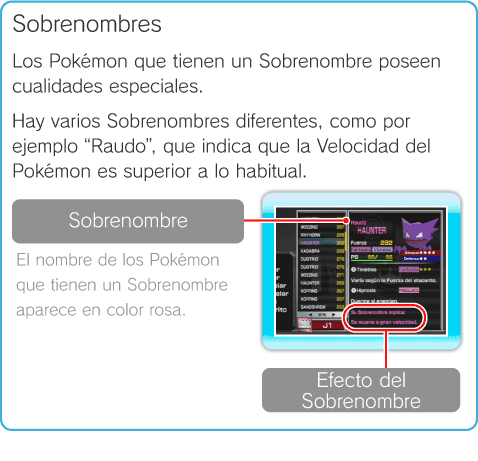
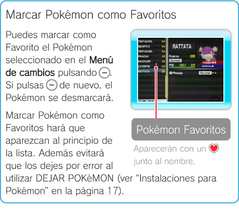

11 |
Menú de cambios |
 |
|
● Información sobre el Menú de cambios El Menú de cambios se abre pulsando
Nota: Para más información sobre el cambio de Pokémon, consulta “Terminal” en la página 12, “Fases” en la página 13 y “Battle Royale” en la página 14.
Nota: Cuando tengas más de 1000 Pokémon, ve a DEJAR POKéMON (ver “Instalaciones para Pokémon” en la página 17) para eliminar algunos de la lista.
Información en la Terminal  Información en las Fases y Battle Royale  Información detallada del Pokémon
 Nota: Esta pantalla aparece en la Terminal.
Fuerza Indica la Fuerza genérica del Pokémon.
Tipo de Pokémon Indica el tipo de Pokémon, como por ejemplo: . Existen varios tipos de Pokémon y algunos Pokémon pertenecen a dos tipos a la vez.
PS (Puntos de Salud) Indica los PS máximos del Pokémon y la cantidad restante. Los PS disminuyen al recibir daños. Una vez que lleguen a 0, el Pokémon se debilitará y no podrás utilizarlo.
Nota: Al volver a la Terminal, los Pokémon recuperan todos los PS automáticamente.
Información sobre movimientos Muestra información sobre los movimientos que el Pokémon conoce. Un Pokémon puede conocer hasta dos movimientos diferentes al mismo tiempo. Estos movimientos pueden asignarse a los dos botones que aparecen a la izquierda del nombre (por ejemplo:
Nota: Puede ser que un Pokémon solo conozca un movimiento. Cuando pulses un botón que no tenga un movimiento asignado, el Pokémon mirará hacia ti.
Nota: En este juego los Pokémon no suben de nivel ni aprenden movimientos durante los combates. Si quieres aprender movimientos nuevos, debes ir a APRENDER UN MOVIMIENTO en la Terminal (ver “Terminal” en la página 12).  Ataque/Defensa Indica el Ataque y la Defensa del Pokémon. Cuantos más ○ se muestren, mayor será el Ataque o la Defensa.
Nota: No aparece en las Fases o en Battle Royale.

Filtrar y ordenar la lista de Pokémon Si pulsas
Nota: Esto no ocurre cuando se abre el Menú de cambios en las Fases o en Battle Royale.
 |
 . Se pueden elegir los Pokémon de la lista y consultar su Fuerza y otros detalles. La información que se muestra en el Menú de cambios varía según el lugar en el que te encuentres.
. Se pueden elegir los Pokémon de la lista y consultar su Fuerza y otros detalles. La información que se muestra en el Menú de cambios varía según el lugar en el que te encuentres.
 y
y  ).
).
 en el Menú de cambios estando en la Terminal, aparecerá un menú con tres opciones.
en el Menú de cambios estando en la Terminal, aparecerá un menú con tres opciones.
 |
 |
 |